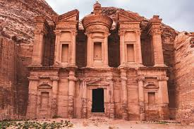
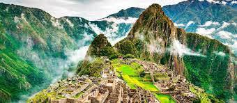
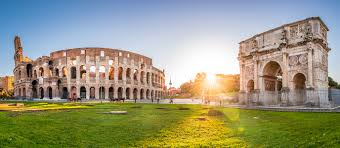

Nuestros Servicios
la Gran Muralla China en China
Es la mayor obra de ingeniería militar del mundo, con una longitud de más de 21.000 kilómetros.
 Ver Más
Ver Más
Petra en Jordania
La antigua y extraordinaria ciudad de Petra, en Jordania, es única, porque está esculpida en piedra arenisca.

Ver Másel Cristo Redentor en Brasil
El Cristo Redentor o Cristo del Corcovado es una estatua art déco que representa a Jesús de Nazaret, con los brazos abiertos, mostrando a la ciudad de Río de Janeiro, Brasil.
 Ver Más
Ver Más
Machu Picchu en Perú
, una de las Siete Maravillas del Mundo Moderno, es la ciudadela inca más famosa del mundo. Construida en el siglo XV por el Inca Pachacútec, se ubica a 2,430 m s. n. m. en la región de Cusco y destaca por su impresionante ingeniería y perfecta armonía con el paisaje

Ver MásChichén Itzá en México
Chichén Itzá, ubicado en la península de Yucatán, es una de las antiguas ciudades mayas más importantes Su arquitectura combina el brillante conocimiento astronómico maya con influencias toltecas.
.jpg) Ver Más
Ver Más
el Coliseo Romano en Italia
Ubicado en el centro de Roma (Italia), fue construido en el siglo I d.C. y tenía capacidad para más de 50.000 espectadores. Es el símbolo más imponente de la grandeza y arquitectura del Imperio Romano.

Ver Másel Taj Mahal en India
El Taj Mahal es un majestuoso mausoleo de mármol blanco ubicado en la ciudad de Agra, estado de Uttar Pradesh, India. Fue construido en el siglo XVII por el emperador mogol Shah Jahan en memoria de su esposa favorita, Mumtaz Mahal
 Ver Más
Ver Más